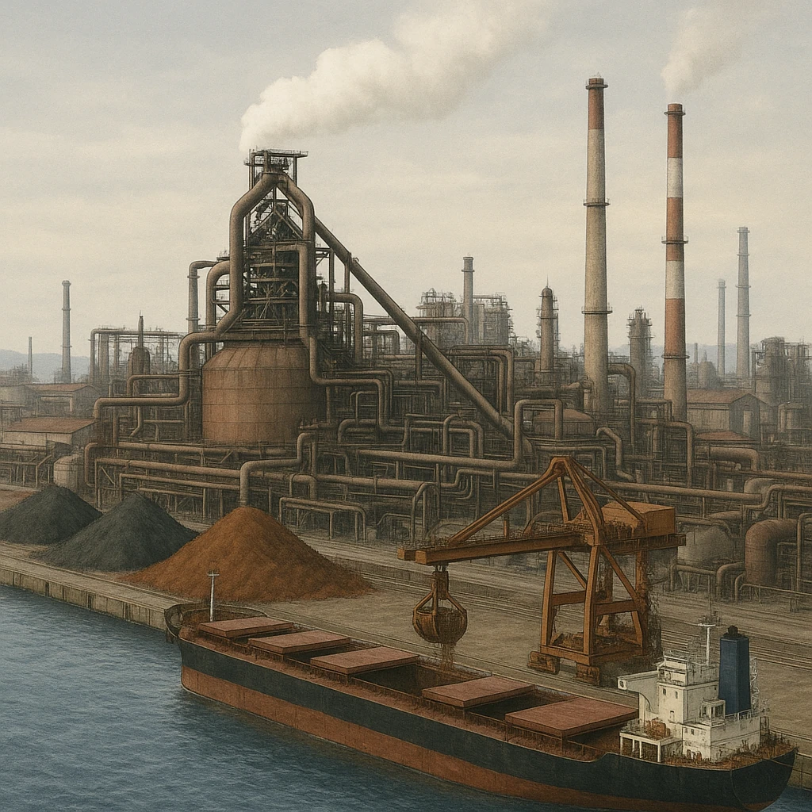

ノート3
北九州工業地域
明治の
鉄
で始まり、あとに追いこされた
明治時代
官営の製鉄所ができる
戦前〜戦後
金属工業を中心に発達
1960年代
エネルギーの主役が変わる（地位が低下）
北九州工業地域のあゆみ
②
明治時代に
八幡
製鉄所が作られた
国がつくった官営の製鉄所。北九州工業地域の中心だった
＋
原料は
筑豊の燃料
と
中国の鉄鉱石
近くに燃料、海のむこうに原料。だから北九州だった
＋
金属工業
を中心に発達した
鉄をつくり、機械や船をつくる工業へ広がった
＊
1960年代、エネルギー源が
石炭
から
石油
へ
エネルギー革命。炭鉱が閉じ、北九州の地位は低下した

いまは
北九州市は
環境首都
をめざしている（くわしくは「沖縄と環境」の章で）。
第13章 九州地方
SEED EDUCATION